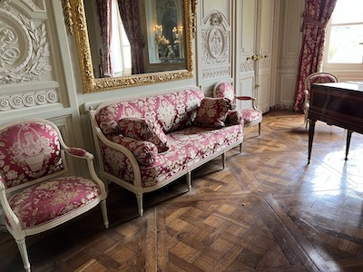

We were both looking forward to this part of the tour: Versailles Day! We woke up early, so we took a morning walk around our neighborhood. We strolled through the market street Rue Cler and watched the vendors set up their stands before grabbing some breakfast pastries. It was a very relaxing way to start the day.
The trip to Versailles isn't very long. Marie took us to a nearby RER train station and we boarded the train to Versailles. A little less than an hour later, we had arrived in the town of Versailles.
The palace and gardens are enormous, and the distances inside Versailles are vast: just walking from the gate to the main entrance is a hike. It was a windy day, so we were happy to get indoors, where we walked through the famous Hall of Mirrors, and saw the Queen's Bedchambers, which had only re-opened days earlier after years of renovation. We also saw the desk where the Treaty of Versailles was signed, which ended World War I.
After we'd finished exploring the main palace, we got ready to explore the gardens. Suddenly, the windy weather turned into a full rainstorm. Most of the tour group decided to head back to Paris, but a few of us attempted to wait out the storm in the Versailles cafeteria, with lunch and glasses of wine. We were glad we did! About an hour later, the clouds miraculously rolled away and a beautiful day awaited us. A lot of visitors had given up because of the storm, which left us the rare opportunity to view the gardens with minimal crowds.
Marie had told us the grounds can take a long time to explore just because of their size, and had mentioned that you can either take a free tram or rent a golf cart. We opted for the golf cart, which was a great decision: we were able to head directly to our target sites and we covered almost the whole grounds that day, including the dozens of side gardens, sculptures and fountains.
 Way out in the corner of the estate, we visited the Grand Trianon and Petit Trianon palaces. These were enormous buildings in their own right, but they were side palaces to the main Versailles palace. We found a nice garden shop way out in the grounds and bought some books. We ran into other tour members out there and chatted. Finally, we headed to Marie-Antoinette's hamlet. It was partially under construction, but it was still fascinating to see.
We brought the golf cart back and caught the train to Paris, where we ate a really nice dinner at a P'tit Troquet, a cozy restaurant that Marie had recommended to us.
{% include next_button.html text="On y va! (\"Let's go!\")" url="day6.html" %}